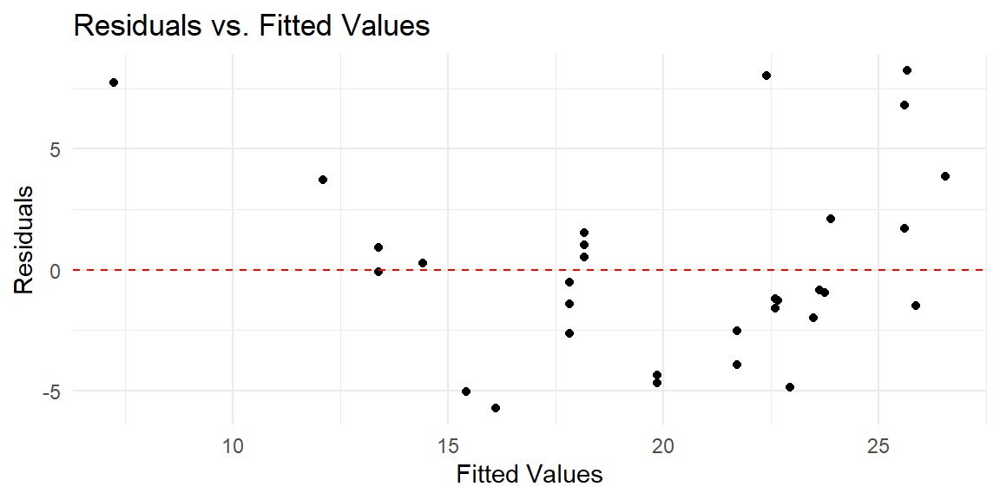
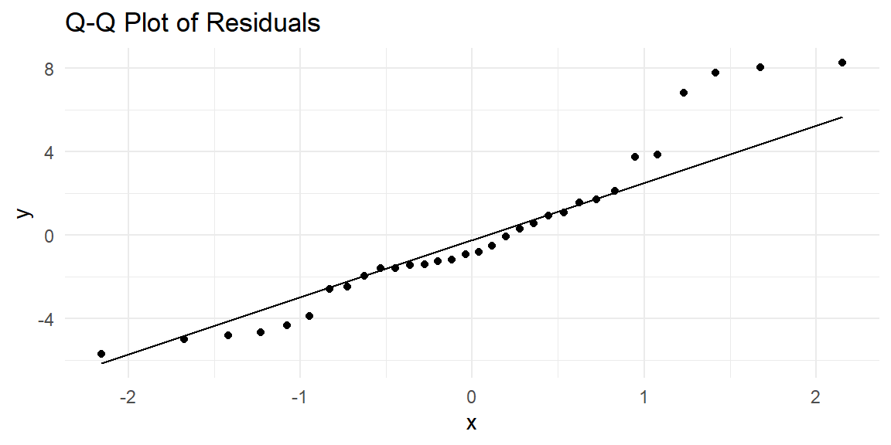
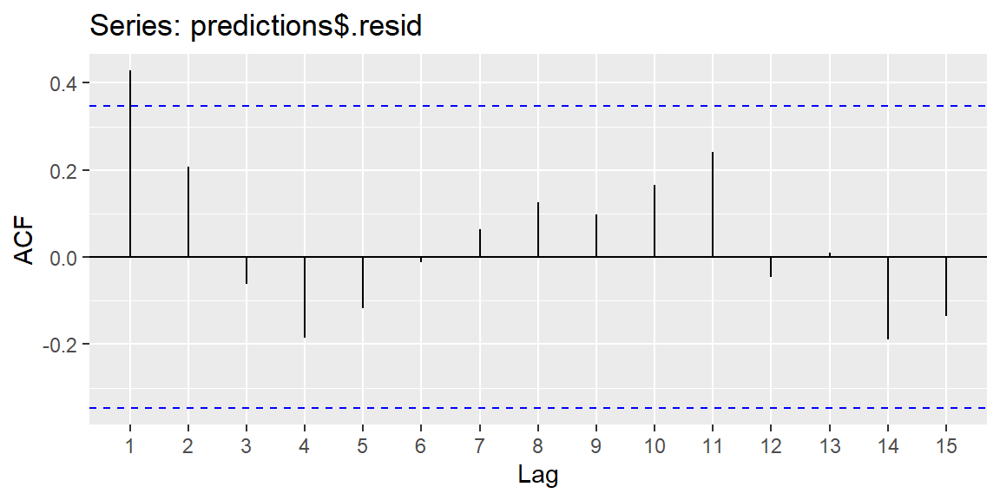
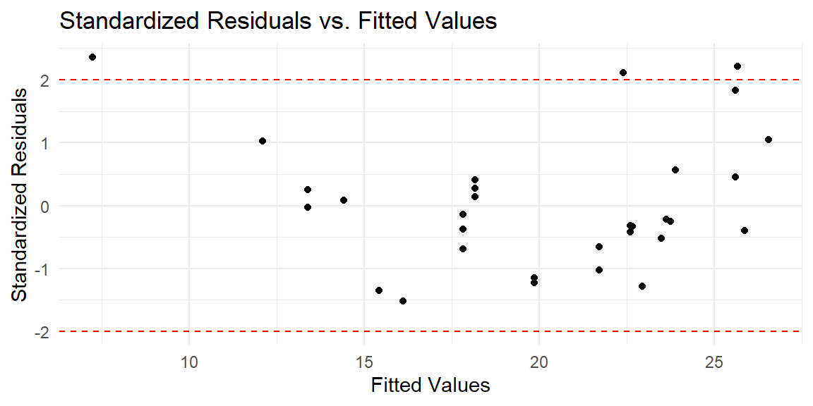

library(tidymodels)9 Simple Linear Regression with Tidymodels
“Knowledge is a process of piling up facts; wisdom lies in their simplification.” - Martin Luther King Jr.
In this chapter, we will introduce the tidymodels framework for fitting a simple linear regression model. tidymodels is a collection of R packages that work together to streamline the modeling process, from data preparation to model tuning and evaluation. The main packages involved in fitting models are parsnip for specifying models and recipes for preprocessing data. Most necessary packages used in this framework can be loaded with the tidymodels package.
We will illustrate with the mtcars data first used in Example 3.1.
9.1 Specifying the Model
In tidymodels, the first step in model building is to define the type of model you want to fit. The parsnip package is the tool within tidymodels that handles model specification. Unlike the traditional approach where you directly use a modeling function like lm(), parsnip separates the model definition from the model fitting, making the process more modular and adaptable to different engines (i.e., different computational backends).
9.1.1 Model Specification with parsnip
The primary function to specify a model in parsnip is linear_reg(), which indicates that you are building a linear regression model. However, linear_reg() does not fit the model by itself. Instead, it allows you to define the general structure of the model, which is then paired with a computational engine. An engine is the specific function or package that will perform the calculations. For linear regression, the default engine is "lm", which corresponds to R’s base lm() function.
Let’s break down how the model specification works:
# Specify a linear regression model
lm_model = linear_reg() |>
set_engine("lm")linear_reg(): This specifies that we are interested in a linear regression model. The model type is abstracted, allowing us to focus on the statistical method (linear regression) rather than the computational details.set_engine("lm"): This command specifies that we will use the"lm"engine to estimate the linear regression parameters.parsnipsupports other engines, such asglmnetfor penalized regression models andstanfor Bayesian regression models, which allows for great flexibility in model building.
9.1.2 Hyperparameters and Engine Customization
You can also specify hyperparameters, which are settings that influence the model fitting process. For simple linear regression with the "lm" engine, there are no specific hyperparameters to set, but with more complex models (such as regularized regression), you might need to tune parameters like the penalty term or the mixture parameter for Lasso or Ridge regression (discussed in a later chapter).
An example of specifying a model with hyperparameters (for demonstration purposes):
# Example for models that require hyperparameters
ridge_model = linear_reg(penalty = 0.1, mixture = 0) |>
set_engine("glmnet")Although these hyperparameters are not necessary for simple linear regression, parsnip enables seamless transition to more complex models, and this flexibility is a key feature of the tidymodels framework.
9.1.3 Choosing the Right Model and Engine
One of the strengths of the parsnip package is that it decouples the conceptual model (linear regression) from the computational engine (e.g., "lm", "glmnet", "stan"). This allows the user to switch engines without changing the model structure.
For example, suppose you wanted to fit the same linear regression model using a Bayesian approach via the stan engine:
# Specify a Bayesian linear regression model
bayesian_lm_model = linear_reg() |>
set_engine("stan")In this case, the model structure remains the same, but the estimation procedure differs (frequentist vs. Bayesian). This level of abstraction enhances the flexibility of your workflow, especially as you explore different modeling approaches.
9.1.4 Benefits of Model Specification with parsnip
The model specification process in parsnip offers several key benefits. Its modularity allows for the separation of model specification from model fitting, enabling you to reuse the same model definition across different datasets or engines. This framework provides flexibility, making it easy to switch between various engines, such as lm(), glmnet(), or stan, without altering the core model structure.
Additionally, parsnip enhances scalability by simplifying the process of extending models. For example, moving from simple linear regression to more complex models like Ridge or Lasso regression only requires adjusting the engine and hyperparameters, without the need to rewrite your code.
In this section, we have seen how to specify a linear regression model using parsnip and set the engine to "lm". Next, we will define the relationship between the predictor and response variables and organize our workflow before fitting the model.
9.2 Defining the Workflow
In the tidymodels ecosystem, workflows serve as a central organizing structure that ties together the components of a model-building process. A workflow in tidymodels allows you to combine different elements, such as the model specification, preprocessing steps, and the formula that defines the relationship between the predictor(s) and response. This section will explain the importance of workflows and demonstrate how to create one for simple linear regression.
9.2.1 What is a Workflow?
A workflow can be thought of as a blueprint that organizes how data flows through different steps of the modeling process. It encapsulates model specification and data preprocessing tasks, which can include transformations such as scaling, normalization, or encoding categorical variables. In traditional modeling approaches, these steps are often written separately, which can lead to code that is harder to manage and prone to errors, especially as the complexity of the model increases.
With workflows, the entire process becomes more organized and reproducible. The key benefit is that you don’t need to repeatedly specify how the data should be prepared or how the model should be fit. Once a workflow is defined, it can be reused or modified easily to fit different models or datasets.
9.2.2 Creating a Workflow for Simple Linear Regression
For a simple linear regression model, our workflow consists of two main components: the formula that defines the relationship between the response and predictor variables, and the model specification itself. Since simple linear regression does not require extensive preprocessing (like handling categorical variables or missing data), the workflow is relatively straightforward.
Let’s begin by constructing the workflow for predicting miles per gallon (mpg) using horsepower (hp) from the mtcars dataset. Recall that the model specification (lm_model) was defined in the previous section.
# Define a workflow
lm_workflow = workflow() |>
add_model(lm_model) |>
add_formula(mpg ~ hp)In this code:
workflow()initializes an empty workflow.add_model()adds the linear regression model (lm_model) that was specified earlier using theparsnippackage.add_formula()defines the model’s formula, which indicates that the response variablempgis modeled as a function of the predictorhp.
The formula-based approach used in this workflow is intuitive for most users familiar with R’s base modeling functions, such as lm() and glm(). However, workflows also support more advanced techniques, such as specifying custom preprocessing steps with the recipes package, which we will explore later.
9.2.3 The Formula Interface
The formula interface in tidymodels is a key aspect of defining relationships between variables. The tilde (~) symbol is used to separate the response variable (on the left-hand side) from the predictor(s) (on the right-hand side). In the example mpg ~ hp, the model will predict mpg using hp as the predictor. This is a simple linear regression model, where the model assumes a linear relationship between these two variables.
If there were multiple predictors, the formula would include them on the right-hand side, separated by a plus sign (+), such as mpg ~ hp + wt + qsec, indicating a multiple linear regression model. The formula syntax allows for flexible model building, including interaction terms (* or :) and transformations (e.g., log() or polynomial terms).
9.2.4 Preprocessing in Workflows
One of the primary advantages of using workflows is the ability to integrate preprocessing steps seamlessly into the model-building process. While simple linear regression may not require extensive preprocessing, workflows can easily handle more complex tasks, such as:
- Standardizing predictors: Scaling variables to have mean 0 and standard deviation 1.
- Handling missing data: Imputing missing values.
- Encoding categorical variables: Converting factors into dummy or one-hot encoded variables.
For example, suppose that instead of horsepower (hp), we had a categorical variable representing car transmission type (am), and we wanted to include it as a predictor. In this case, we could use the recipes package to preprocess the data by encoding the categorical variable. The workflow can be extended as follows:
# Example of adding preprocessing using recipes
recipe = recipe(mpg ~ hp + am, data = mtcars) |>
step_dummy(all_nominal_predictors())
lm_workflow = workflow() |>
add_model(lm_model) |>
add_recipe(recipe)In this example, recipe() initializes a preprocessing recipe that converts the categorical predictor am into a set of dummy variables. step_dummy() is one of many preprocessing steps available in the recipes package.
9.2.5 Why Use Workflows?
Workflows provide several key benefits when building models with tidymodels:
- Reproducibility: By encapsulating the entire modeling process into a workflow, the model can be easily reproduced, reducing the chances of human error. Each step is clearly defined and can be executed in a consistent manner.
- Modularity: You can modify or swap out different components of the workflow—such as changing the model from linear regression to a different type of regression—without rewriting significant portions of your code.
- Separation of Concerns: Workflows help you organize your code by clearly separating data preprocessing, model specification, and model fitting. This makes it easier to debug, extend, or modify your models later on.
- Preprocessing Integration: Workflows enable the integration of complex preprocessing pipelines, ensuring that data transformations and model fitting occur seamlessly within a single structure. This is especially useful for more advanced models, where data preprocessing steps are often critical to model performance.
In this section, we introduced the concept of workflows in tidymodels, which serves as a crucial tool for organizing and managing the different components of the modeling process. For simple linear regression, the workflow was relatively simple, involving a formula and a model specification. However, workflows can be extended to handle more complex models and preprocessing tasks as we will see in later chapters. By using workflows, you ensure that your model-building process is organized, reproducible, and adaptable to future changes.
9.3 Fitting the Model
Once the model and workflow have been defined, the next step is to fit the model to the data. In tidymodels, this is done using the fit() function, which estimates the model parameters (such as the intercept and slope in simple linear regression) based on the data provided. The fitting process involves using the workflow to apply the model specification and formula to the dataset.
9.3.1 The fit() Function
The fit() function is a central function in the modeling process that takes the workflow and the data as inputs. It applies the formula and estimates the model’s parameters by minimizing the SSE (for linear regression models) or another appropriate criterion depending on the model type.
For our simple linear regression model, we fit the model using the mtcars dataset, where the response variable is mpg (miles per gallon) and the predictor is hp (horsepower).
# Fit the model
lm_fit = lm_workflow |>
fit(data = mtcars)In this command:
lm_workflow: The workflow containing the model and the formula for simple linear regression.data = mtcars: The dataset used to fit the model. The model will use this data to estimate the parameters \(\beta_0\) (the intercept) and \(\beta_1\) (the slope).
The fit() function then processes the data, applies the specified formula (mpg ~ hp), and estimates the model parameters using the specified engine (lm in this case). In the background, tidymodels calls the R base lm() function to fit the model, but the workflow structure abstracts these technical details, making it easier to switch between engines without altering the core syntax.
9.3.2 Model Output
After fitting the model, it’s essential to inspect the model’s output to understand the estimated relationship between the predictor and response variables. The fitted workflow object (lm_fit) contains a number of important details, including the estimated coefficients for the linear model, the residuals, and performance metrics.
Let’s start by examining the output of the fitted model:
# View the model fit summary
lm_fit══ Workflow [trained] ══════════════════════════════════════════════════════════
Preprocessor: Formula
Model: linear_reg()
── Preprocessor ────────────────────────────────────────────────────────────────
mpg ~ hp
── Model ───────────────────────────────────────────────────────────────────────
Call:
stats::lm(formula = ..y ~ ., data = data)
Coefficients:
(Intercept) hp
30.09886 -0.06823 The output of lm_fit provides an overview of the fitted model, including the coefficients for the intercept and slope. This information is crucial for interpreting the relationship between the predictor and the response variable. Specifically, the estimated intercept (\(b_0\)) represents the expected value of mpg when hp is zero, and the slope (\(b_1\)) represents the expected change in mpg for each one-unit increase in hp.
9.3.3 Extracting Model Coefficients
To better understand the results, you can extract the estimated coefficients from the model using the tidy() function from the broom package, which is part of the tidymodels ecosystem. This function provides a clean, easy-to-read summary of the model’s coefficients, along with other important statistics such as standard errors, t-values, and p-values.
# Extract coefficients
tidy(lm_fit)# A tibble: 2 × 5
term estimate std.error statistic p.value
<chr> <dbl> <dbl> <dbl> <dbl>
1 (Intercept) 30.1 1.63 18.4 6.64e-18
2 hp -0.0682 0.0101 -6.74 1.79e- 7This table shows the estimated coefficients for the intercept and slope:
- Intercept: The estimated intercept (\(b_0\)) is 30.10, meaning that when
hpis zero, the predictedmpgis approximately 30.10. In this example, the interpretation is not practical. - Slope: The estimated slope (\(b_1\)) is -0.068, indicating that for each additional unit of horsepower, the
mpgdecreases by about 0.068 miles per gallon, on average. The negative sign confirms an inverse relationship betweenmpgandhp.
Additionally, the table provides the standard errors, t-statistics, and p-values, which are useful for assessing the statistical significance of the estimated coefficients. In this case, both the intercept and the slope have very small p-values (less than 0.001), suggesting that they are statistically significant at conventional significance levels (e.g., 0.05).
9.3.4 Model Predictions
After fitting the model, it’s often useful to make predictions based on new or existing data. The predict() function allows you to generate predictions from the fitted model. In this case, we’ll generate predictions using the original dataset (mtcars), though in practice, you would typically use the model to predict on new, unseen data.
# Make predictions on the original data
predictions = lm_fit |>
predict(new_data = mtcars)
# Add predictions to the original data
mtcars_with_preds = mtcars |>
select(mpg, hp) |>
mutate(predicted_mpg = predictions$.pred)
# View the predictions
head(mtcars_with_preds) mpg hp predicted_mpg
Mazda RX4 21.0 110 22.59375
Mazda RX4 Wag 21.0 110 22.59375
Datsun 710 22.8 93 23.75363
Hornet 4 Drive 21.4 110 22.59375
Hornet Sportabout 18.7 175 18.15891
Valiant 18.1 105 22.93489In this example, we use the predict() function to generate predicted values of mpg for each observation in the mtcars dataset. These predictions are stored in a new column called predicted_mpg. Comparing the predicted values to the actual values allows us to assess how well the model fits the data.
9.3.5 Performance Metrics
Once predictions have been made, it’s important to evaluate the model’s performance. One common metric for regression models is the Root Mean Squared Error (RMSE), which measures the average difference between the predicted and actual values. Lower RMSE values indicate better model performance.
You can calculate the RMSE and other performance metrics using the yardstick package, another component of the tidymodels framework.
# Calculate RMSE
metrics = lm_fit |>
predict(new_data = mtcars) |>
bind_cols(mtcars) |>
metrics(truth = mpg, estimate = .pred)
# View performance metrics
metrics# A tibble: 3 × 3
.metric .estimator .estimate
<chr> <chr> <dbl>
1 rmse standard 3.74
2 rsq standard 0.602
3 mae standard 2.91 This will output the RMSE, along with other useful metrics like the Mean Absolute Error (MAE) and R-squared.
rmse: The Root Mean Squared Error (RMSE) is approximately 3.74, meaning that, on average, the model’s predictions are off by about 3.74 miles per gallon.rsq: The R-squared value is 0.60, indicating that the model explains about 60% of the variation inmpg.
In this section, we demonstrated how to fit a simple linear regression model using the fit() function in tidymodels. We also explored how to extract and interpret the model coefficients, make predictions, and evaluate model performance using metrics like RMSE and R-squared. By abstracting the fitting process into a workflow, tidymodels makes it easy to manage and evaluate models in a structured and reproducible way. In the next section, we will delve into model diagnostics to assess how well the assumptions of linear regression are met in this fitted model.
9.4 Model Diagnostics
After fitting a linear regression model, it’s essential to check the underlying assumptions to ensure that the model is appropriate for the data and that the results can be trusted. These assumptions include linearity, constant variance (homoscedasticity) of the residuals, independence of errors, and normally distributed errors. Violations of these assumptions can lead to biased estimates or misleading inference. In this section, we will focus on diagnosing these assumptions using residual plots and other techniques, leveraging the tidymodels framework.
9.4.1 Residuals and Fitted Values
To start our diagnostics, we will generate the residuals and fitted values using the augment() function from the broom package, which adds additional information such as residuals and fitted values to the original dataset. To use augment we must first extract the fitted model from the overall fitted workflow with the extract_fit_engine function.
# Augment the model with residuals and fitted values
predictions = extract_fit_engine(lm_fit) |>
augment()
# View the first few rows of augmented data
head(predictions)# A tibble: 6 × 8
..y hp .fitted .resid .hat .sigma .cooksd .std.resid
<dbl> <dbl> <dbl> <dbl> <dbl> <dbl> <dbl> <dbl>
1 21 110 22.6 -1.59 0.0405 3.92 0.00374 -0.421
2 21 110 22.6 -1.59 0.0405 3.92 0.00374 -0.421
3 22.8 93 23.8 -0.954 0.0510 3.92 0.00173 -0.253
4 21.4 110 22.6 -1.19 0.0405 3.92 0.00210 -0.315
5 18.7 175 18.2 0.541 0.0368 3.93 0.000389 0.143
6 18.1 105 22.9 -4.83 0.0432 3.82 0.0369 -1.28 9.4.2 Plotting Residuals vs. Fitted Values
A key diagnostic plot for linear regression is the residuals versus fitted values plot. This plot helps assess the assumption of linearity and constant variance (homoscedasticity). In a well-behaved model, the residuals should exhibit no clear pattern and should have constant spread across all levels of the fitted values.
Let’s create the residuals vs. fitted values plot:
# Plot residuals vs. fitted values
ggplot(predictions, aes(x = .fitted, y = .resid)) +
geom_point() +
geom_hline(yintercept = 0, linetype = "dashed", color = "red") +
labs(x = "Fitted Values", y = "Residuals", title = "Residuals vs. Fitted Values") +
theme_minimal()
In this plot:
- The x-axis represents the fitted values (predicted
mpgfrom the model). - The y-axis represents the residuals (differences between observed and predicted
mpg). - The dashed red line at zero represents where the residuals would lie if the model were perfect.
9.4.3 Checking Homoscedasticity (Constant Variance)
Another assumption of linear regression is that the residuals should have constant variance, also known as homoscedasticity. If the spread of residuals increases or decreases with the fitted values, the assumption of constant variance is violated, which can lead to inefficient estimates and biased standard errors.
In the residuals vs. fitted values plot, this would manifest as a “funnel” shape, where the residuals get larger (or smaller) as the fitted values increase. If you observe this pattern, it suggests heteroscedasticity, and you may need to consider a transformation of the response variable or use robust standard errors to account for the non-constant variance.
9.4.4 Normality of Residuals
Linear regression assumes that the residuals are normally distributed. A common way to check this assumption is to create a Q-Q (quantile-quantile) plot, which compares the quantiles of the residuals to the quantiles of a normal distribution. If the residuals are normally distributed, the points should fall roughly along a 45-degree line.
Let’s create a Q-Q plot using ggplot2:
# Q-Q plot of residuals
ggplot(predictions, aes(sample = .resid)) +
stat_qq() +
stat_qq_line() +
labs(title = "Q-Q Plot of Residuals") +
theme_minimal()
In the Q-Q plot:
- If the residuals are normally distributed, the points will fall along the 45-degree reference line.
- Deviations from this line, especially at the tails, suggest that the residuals may not follow a normal distribution.
If the normality assumption is violated (e.g., heavy tails or skewness), it may be necessary to apply a transformation to the response variable or explore alternative models that do not assume normality, such as generalized linear models.
9.4.5 Checking for Independence of Errors
Another important assumption is that the errors (or residuals) should be independent of one another. This is especially relevant in time series data, where errors may be autocorrelated (i.e., residuals at one time point may be related to residuals at nearby time points). We can used the residuals in an ACF plot to determine if there is significant autocorrelation at a lag.
library(forecast)
ggAcf(predictions$.resid)
9.4.6 Detecting Outliers
To identify potential outliers, you can plot the standardized residuals, which are residuals divided by their estimated standard deviation. Residuals with an absolute value greater than 2 or 3 are often considered potential outliers.
# Plot standardized residuals
ggplot(predictions, aes(x = .fitted, y = .std.resid)) +
geom_point() +
geom_hline(yintercept = c(-2, 2), linetype = "dashed", color = "red") +
labs(x = "Fitted Values", y = "Standardized Residuals", title = "Standardized Residuals vs. Fitted Values") +
theme_minimal()
In this plot:
- Points outside the dashed lines (at standardized residuals of -2 and 2) are potential outliers. These points should be investigated further to understand why they deviate from the model’s predictions.
9.5 Summary
In this chapter, we demonstrated how to use the tidymodels framework to fit a simple linear regression model. We covered the key steps, including specifying the model with parsnip, building a workflow, and fitting the model. Additionally, we explored how to extract model results and perform basic diagnostics.
The tidymodels ecosystem offers a flexible and organized approach to model building, and in future chapters, we will expand this framework to handle more complex regression models and advanced techniques such as cross-validation and model tuning.